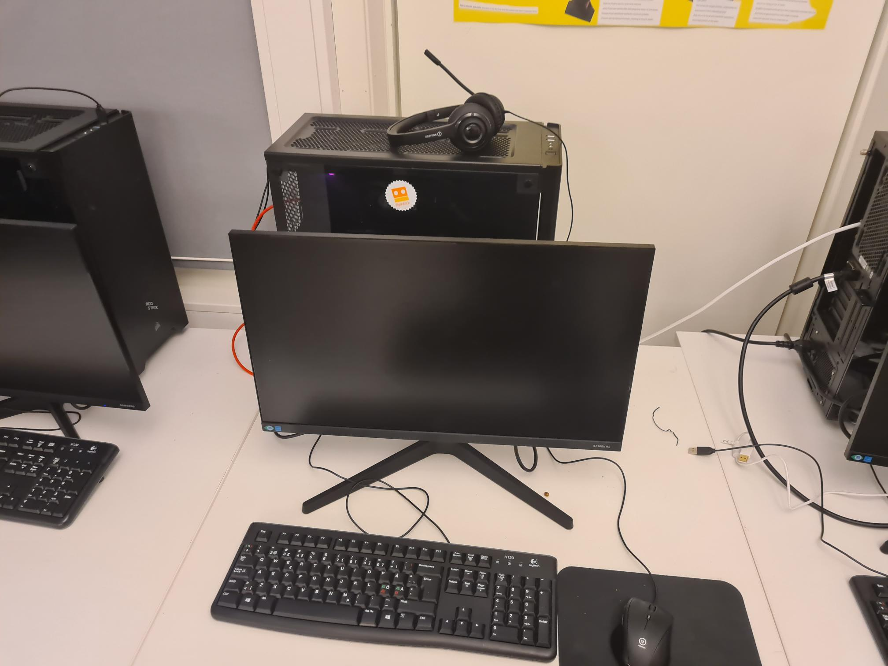

YFF
Om YFF:
YFF står for Yrkesfaglig Fordypning, og er et fag som handler om hvordan det er å være i arbeidslivet, og prøver å gi realistiske arbeidsopplevelser for elevene. Yrkesfaglig Fordypning er i mange forskjellige yrkesfag, og vi har hatt det for å drive med forskjellige praktiske ting. I YFF har vi vært innom flere forskjellige retninger innen faget IT, og lært litt om dem.
Hva vi har gjort:
I YFF har vi vært på utplassering i tre uker, uke 10, 11 og 12. I disse ukene var jeg på utplassering hos Edentri i Oslo, og da jeg var der, drev jeg for det meste med programmering og litt annet også. Vi har også hatt en prosjektuke der vi satt opp våre egne gaming pc-er. Under hele skoleåret har vi hatt en blog vi skal skrive på underveis etter hver time.
Hva jeg er stolt av:
Utplassering
Som jeg skrev i forrige paragraf, har vi hatt en utplasserings-periode på tre uker. I disse tre ukene var vi på utplassering hver eneste dag, og skrev om det i bloggen vår. Jeg var i Oslo hos Edentri, et selskap som henter inn informasjon fra forskjellige dokumenter som fakturaer, og gjør det om til data det er lettere å lese og å bruke i andre programmer som Excel. Jeg drev for det meste med programmering i JavaScript, men jeg lærte også om XML, XSL, XSD, CSV og RegEx. Disse brukte jeg bare littegrann, men nok til at jeg lærte meg litt om dem. Grunnen til at jeg er stolt av dette er fordi jeg klarte å lage forskjellige scripts som de faktisk bruker i produksjon. Jeg ble også veldig fornøyd etter at jeg klarte en stor oppgave som innebærte at jeg skulle bruke løsningen dems til å lage en XML-fil, som jeg skulle bruke en egen XSL-fil på, for å ende opp med en CSV-fil.
Prosjektuke
I uke 47 hadde vi en uke på oss som vi skulle bruke på å sette opp egne PC-er, og grunnen til at jeg ble stolt over dette prosjektet, var at jeg var den første som fikk PC-en min til å fungere. Det tok litt tid før jeg fikk installert Windows, så jeg var ikke den som brukte den først, men jeg fikk den til å fungere før noen andre i klassen.
